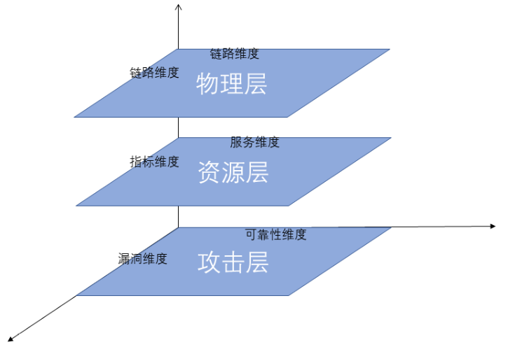

多层多维模型简介（3M）
- 分为3个层次，攻击层、资源层、物理层
- 每层有1或者2个维度，从不同角度对每一层进行度量
- 一共提供三个粒度，用户根据需求选择
3M模型层次图
网络拓扑结构展示
攻击层
在这一层只考虑网络之间各个节点之间的关系而不考虑每一个节点所拥有的资源以及节点的安全配置、性能等度量分别为可靠性维度，漏洞维度
可靠性维度:对所有节点的连通性和连通效率进行考量
漏洞维度:对所有节点的漏洞进行CVSS评分并进行计算
可靠性维度
可靠性计算方法：对网络中弱连通分量和强连通分量进行考量网络连通分量个数 {{ connectedCount }}
网络连通分量计算公式
Mv=(-d+1)/(V-1) * 10+10网络连通分量计算结果
{{ connectResult }}
漏洞维度
| 主机编号 | 主机名字 | 主机重要性 | 漏洞名字 | 漏洞评分 |
| {{ d.nodeid }} | {{ d.nodeName }} | {{ d.importance }} | {{ d.vulName }} | {{ d.v2score }} |
单节点漏洞维计算方法：综合节点上所有漏洞的CVSS评分
| 主机编号 | 主机名字 | 漏洞评分 | ||
| {{ d.nodeid }} | {{ d.nodeName }} | {{ d.score }} | {#{{ d.service }} | #} {#{{ d.serviceImportance}} | #}
| 子网名称 | 漏洞评分 | ||
| {{ d.name }} | {{ d.value }} | {#{{ d.service }} | #} {#{{ d.serviceImportance}} | #}
环境层
#} {##}
{# #}
{#
#}
{#
#} {# 资源：通过攻击者从外界因特网进入获得资源所需要的攻击的路径长度入手进行度量
#} {# 单个节点服务基本度量规则：每个节点资源的重要性除以资源的获取难度乘服务重要性
#} {# 子网基本度量规则：子网中所有节点服务度量结果之和
#} {##}
{#
#}
{#
#}
| 名称 | #} {#重要性 | #} {#
| {{ d.name }} | #} {#{{ d.importance}} | #} {#
服务维度计算方法
#} {# 对网路中资源以及服务进行考量#} {# 资源：通过攻击者从外界因特网进入获得资源所需要的攻击的路径长度入手进行度量
#} {# 单个节点服务基本度量规则：每个节点资源的重要性除以资源的获取难度乘服务重要性
#} {# 子网基本度量规则：子网中所有节点服务度量结果之和
#} {#
| 名称 | #} {#度量值 | #} {#
| {{ d.name}} | #} {#{{ d.value}} | #} {#
{{ sum }}
#} {#资源层
对网路中资源维度以及指标项维度进行考量资源：通过攻击者从外界因特网进入获得资源所需要的攻击的路径长度入手进行度量
指标项：对网路中各项指标变化进行度量
| 节点编号 | 节点名称 | 节点重要性 | 服务名称 | 重要性 |
| {{ d.id }} | {{ d.nodeName }} | {{ d.importance }} | {{ d.serviceName }} | {{ d.serviceImportance}} |
资源维计算方法
#} {# 资源分布维度指的是同一台主机上同时存在资源及其系统缺陷的联合度量维度#} {# 对于一个主机，若其资源越重要但其存在的缺陷也很严重，那就存在被攻击的隐患
#} {# 基本度量规则即为每个节点资源的重要性乘以其上服务重要性
#}
服务维度
单个节点服务基本度量规则：每个节点资源的重要性除以资源的获取难度乘服务重要性| 编号 | 名称 | 度量值 |
| {{ d.id }} | {{ d.name}} | {{ d.value}} |
| 名称 | 度量值 |
| {{ d.name}} | {{ d.value}} |
指标维度
节点基本度量规则：该指标低于平均值认为安全，高于平均值而处于指标上升状态则不安全，高于平均值且处于下降状态则安全| 主机编号 | 指标名字 | 评估结果 |
| {{ d.nodeid }} | {{ d.indexname}} | {{ d.value}} |
| 主机编号 | 评估结果 |
| {{ d.nodeid }} | {{ d.value}} |
| 子网名字 | 评估结果 |
| {{ d.name }} | {{ d.value}} |
物理层
| 源节点 | 源节点重要性 | 目标节点 | 目标节点重要性 | 链路重要性 |
| {{ d.source }} | {{ d.sourceImportance }} | {{ d.target }} | {{ d.targetImportance }} | {{ d.importance}} |
链路维度
链路维度指的是对网络中不同的连接路径进行度量对于一条连接路径，若其连接的两个节点的资源越重要，被攻击的隐患就越大
单链路基本度量规则即为每条路径上两个节点资源的重要性乘以其上链路重要性
| 源节点 | 目标节点 | 链路计算结果 |
| {{ d.source }} | {{ d.target }} | {{ d.value }} |
| 名称 | 计算结果 |
| {{ d.name }} | {{ d.value }} |
网络总计算结果
全网子网
子网计算规则：根据三个层次进行综合度量，如果度量结果大于0.6则不安全，否则安全| 名称 | 计算结果 |
| {{ d.name }} | {{ d.value }} |
全网度量规则：网络中安全子网的个数大于全部子网的三分之二视为安全，否则不安全 {#